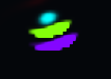
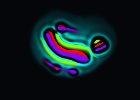
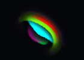
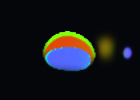

Two dots
Red is drawn to green.
Green runs from red.
Too close, both push apart. Too far, nothing.
drag the green dot
Many dots
The same two rules, between every pair in range.
row feels column · click a cell to change it
Six colours
A random 6×6 matrix.
A cell gives its mass away
Each step, every cell splits what it holds between itself and its neighbours.
Neighbours with a higher score A get more.
MaCE · Papadopoulos & Guichard (2025), arXiv:2507.12306
Giving vs taking
Same score in both: mass is drawn to nearby mass. Only the direction of the update differs.
average of its neighbours
what it holds
Each colour becomes a channel
Count how many dots of each colour sit in each cell. Keep the counts, drop the dots.
From dots in range to mass in range
weighted by a kernel K
A dot gets a push.
A cell gets a score A per channel.
MaCE moves each channel's mass toward its higher A.
move the mouse over either picture
A chase, as fields
Two channels, a 2×2 matrix, MaCE.
Red is drawn to green, green flees red. The pair forms bands that travel together.
It doesn't look like the dots. The kernel here is a ring, not the particle force curve.
Six channels
A random 6×6 matrix, as fields.
Found in the full version
512×512, on the GPU. Creatures cut out of random worlds and kept if they hold together.






Built on
- MaCE · Papadopoulos & Guichard (2025) · arXiv:2507.12306
- Particle Life · Mohr, particle-life.com, after Ventrella, Clusters
- Lenia · Chan (2019) · arXiv:1812.05433
- Flow-Lenia · Plantec et al. (2023) · arXiv:2212.07906
- Non-reciprocal Cahn–Hilliard · Saha, Agudo-Canalejo & Golestanian (2020) · arXiv:2005.07101
Thanks to Alex Rowe (cip-life), Mundy Reimer and Sean Hardy.